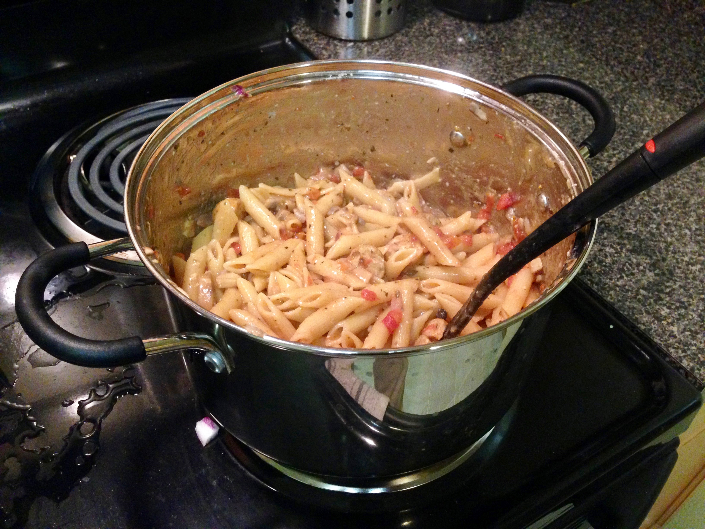

brkfst
TODO
- TODO
dinner
TODO
- TODO
pasta
Orzo n' Cheese (Source)

- 1 lb Ham steak, cubed
- 16 oz Box of orzo
- Bag of frozen broccoli
- 1 cup Parmesan cheese, shredded or grated
- 3/4 cup skim milk
- Crisp cubed ham over medium-high heat and in parallel, bring a large pot of water to boil
- In the pot, cook the orzo and for the last two minutes, add the frozen broccoli
- Drain and return the orzo and broccoli to the pot. Stir on low heat with the milk, Parmesan, and crisped ham
Pesto-Naan-Pizza

- Mozzarella pearls
- Diced Pepper
- Diced Tomato
- Spinach
- Pesto
- Naan
- Preheat the oven to 400'
- Sauté the diced peppers and tomato
- On the Naan, spread the pesto, then top with all of the vegetables and mozzarella. Cook for 6-7 minutes in the oven
Pasta + Mozzarella

- Box of pasta
- Bag of Frozen peas
- Pesto
- Red pepper flakes
- Mozzarella ball
- 1 Tomato
- Boil the pasta following the directions, then for the last two minutes, add the frozen vegetable to the boiling pasta
- Drain and return to the pot - immediately mix with pesto and red pepper flakes and wait to slightly cool
- Serve the pasta and top with the diced tomato and mozzarella!
Note: if the mozzarella is added to hot pasta it will melt and get stringy, so store it separately, which will make reheating the pasta easier
Peanut Noodles

- Linguine, Egg Noodles, or Rice
- Chopped baby carrots
- Chopped shallots (a.k.a. white base of green onion)
- *Other vegetables: Peppers, Broccoli, Zucchini, Snow Peas*
Sauce:
- 6 Tbsp PB
- 1.5 Tbsp hot chili oil
- 2 Tbsp sesame oil
- 7 Tbsp soy sauce
- 2 tsp cider vinegar (or white wine/rice vinegar)
- 1" fresh ginger or 1.5 tsp cinnamon, nutmeg, or sugar
Garnish Options:
- Sesame seeds or Peanuts
- Green onions
- Cilantro
- *Can be served with shrimps marinated in lime, salt, and garlic powder then sautéed
- Mix the sauce until smooth and prep the vegetables separately
- Boil the pasta, drain, then immediately toss with vegetables and sauce
(Original Source: My Coworkers Dani and Michael)
Dragon Noodles (Source)

- 16 oz Bag of Lo Mein Noodles
- 2 tbsp butter
- 1 tsp of red pepper flakes
- 3 eggs
- Sliced green onions or zucchini (which is better than you might think)
- 3 tbsp soy sauce
- 3 tbsp Sriracha
- Cilantro
- Start the lo mein noodles in a pot for 5-7 minutes (see instructions) and start melting 2 tbsp of butter in a large skillet
- When the butter melts, add the red pepper flakes and zucchini or green onion
- After a few minutes, add the three eggs to the skillet and keep on medium heat until cooked
- When the lo mein noodles finish, add them to the skillet and add the Sriracha and Soy Sauce on top. Mix everything up and heat for a few additional minutes
Sausage and Mushroom Penne Pasta (Source)

- 3-6 Links Italian Sausage
- 1 Small Onion
- 8 oz. Container of Button Mushrooms
- 28 oz. can of Crushed Tomatoes
- 3 Cloves of Garlic (1/2 tsp Garlic Powder)
- 1 tsp Basil
- 1 tsp Oregano
- 1/4 cup Parmesan
- 1 lb box of Penne / Rigatoni
- Chopped parsley (optional)
- In a large pot, cook the sausages in a small amount of olive oil on medium heat until brown on the outside and firm {~5 minutes} (if precooked just skip this step)
- Dice and prep the garlic, onions, and mushrooms. In parallel turn the heat off on the browning sausage to let cool
- Using tongs, remove and slice the sausage into rounds. Toss the rounds back in for 4 minutes or until brown
- Add the canned tomatoes, basil, oregano, garlic, onions, and mushrooms, then 3.5 cups of water and the box of pasta
- With a lid, bring the pot to a rapid boil. Once boiling, stir, replace the lid, and simmer (~30%)
- Stir the pot every five minutes while simmering. After 15 minutes if too much water is left, remove the lid and let simmer for slightly longer
grain
Easy Quinoa & Stuff

- Prepare Quinoa and (optional) sautée peppers and onions
- Microwave a can each of black beans, tomatoes, and corn in a large tupperware
- Mix everything together with your choice(s) of red pepper flakes, curry powder, Sriracha, salsa, avocado, lettuce, etc
Fajitas (Source)

Main:
- 3 Peppers
- 3 Tomatoes
- 1 Lg. Onion
- Can of Corn
- Can of Black Beans
- 1 lb. Chicken (~two breasts)
Seasonings:
- 1 Tbsp chili powder
- 2 Tbsp vegetable oil
- ¼ tsp garlic powder
- ½ Tbsp corn starch
With:
- 10 6-inch tortillas
- 2 cups of Rice
- 1/3 bag of spinach
- 1/2 jar of Salsa
- Fresh lime
- Cilantro
- Defrost the chicken and preheat the oven to 400 degrees
- Cut the peppers, onions, tomatoes, and chicken into 1/4" strips and fill a 9 x 13" casserole dish. Add the beans and corn, then cover with the seasonings and olive oil. Mix by hand
- Bake for 30 minutes and start the rice
- Crisp the tortillas in the pan so everything can be served hot!
Curried Chickpeas (Source)

- 1 Small Onion (or diced pepper)
- 1.5 Tbsp Curry Powder
- 1" fresh ginger or 1 tsp cinnamon or 1 tsp nutmeg
- 1/4 tsp Garlic Powder (or 2-3 fresh cloves)
- 8 oz (full bag) of spinach
- 15 oz jar of tomato sauce
- 29 oz can of chickpeas/Garbanzo beans
- rice / naan / etc.
- Start cooking the rice and rinse & drain the chickpeas
- In a large skillet on medium heat, sauté the diced onion for 4 minutes with a small amount of olive oil
- Add the garlic powder, ginger (cinnamon), and curry powder then cook for an additional minute
- Add 1/4 cup water and all of the spinach
- Once the spinach has wilted, add the tomato sauce and garbanzo beans. Cook for 5 more minutes
Mini Pizzas
Perfect for pizza leftovers
- English Muffins / Bagels
- Marinara Sauce
- Spinach
- Mozzarella Cheese
- Red pepper flakes, Pepperoni, etc.
- Pre heat the oven to 400'F
- TODO...
Pizza

- Bag of pre-kneaded dough
- Olive oil
- Garlic (Optional)
- Marinara Sauce
- Mozzarella Cheese
- Parmesan Cheese (Optional)
- Spinach, Peppers, Tomatoes, etc.
- Chicken, Sausage, Pepperoni, etc.
- Red pepper flakes
- Pre-heat the oven to 400'F
- Prep a pizza stone or baking pan with a layer of tin foil, then grease with olive oil and roll out the pizza dough
- (Optional) In a pan, heat olive oil and garlic, then spread onto the pizza dough
- Layer on marinara sauce, spinach (optional), the cheese(s), then toppings
- Bake for about 22 minutes, then additional time as needed
dssrt
Cocoa-Peanut Butter Smoothie

- Yogurt
- 1-2 spoons of of pb
- Banana
- Spoon of cocoa powder
- & some water to thin the mixture
- Blend
Cake Pops
Bake a cake according to the instructions and then once it's completely cooled, crumble the cake and mix in a container of frosting! And then dip in melted chocolate if desired